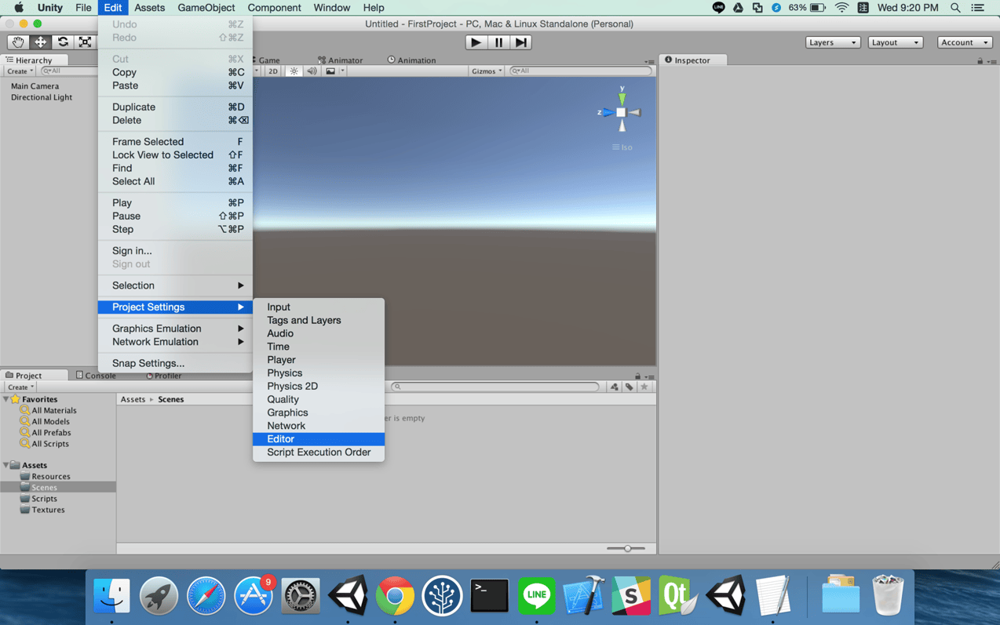
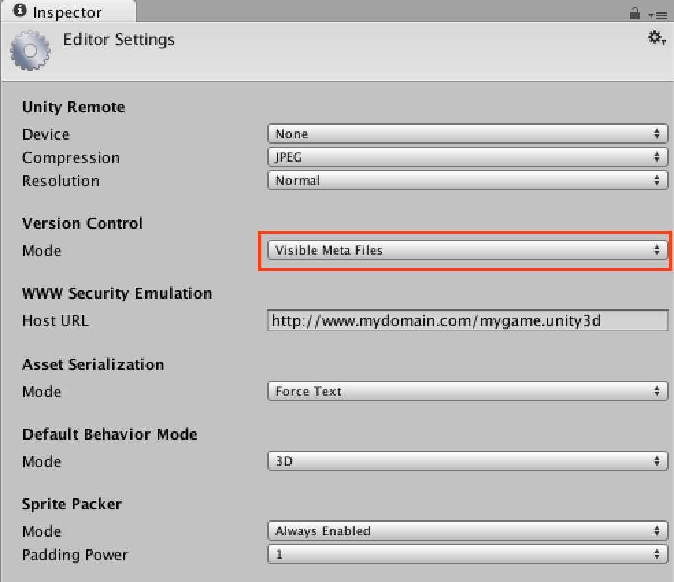
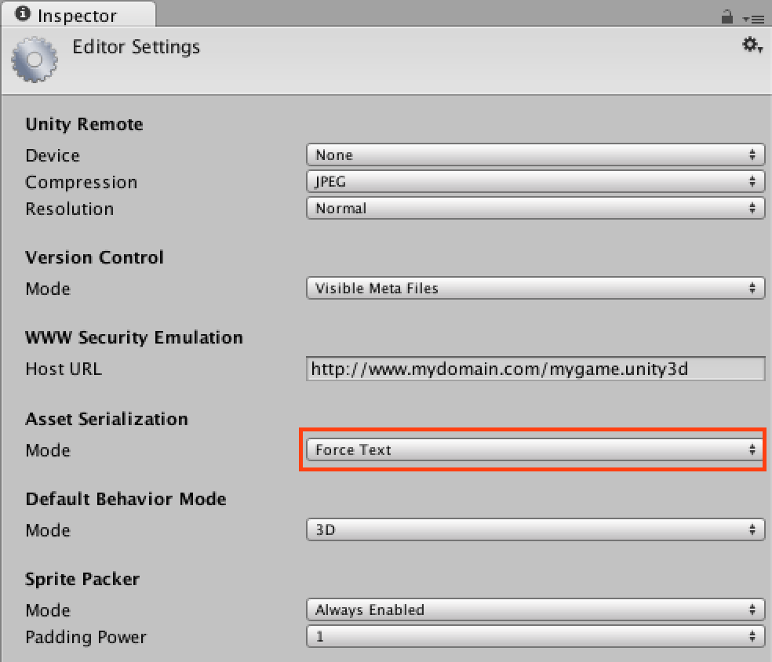
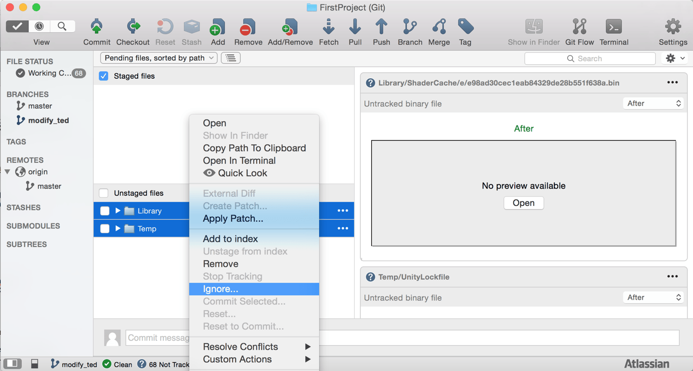
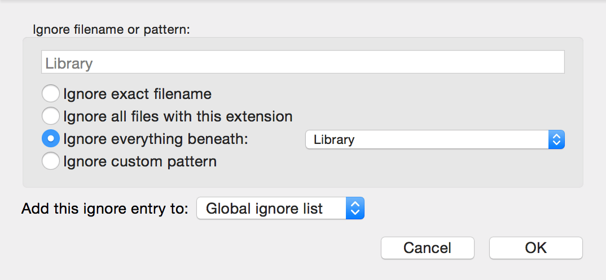
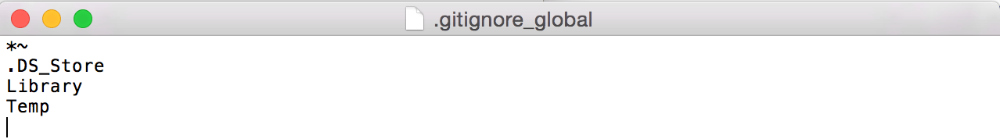

然而再使用 Git 時
為了更方便的比對資料修改的內容
所以需要更改一些 Unity 裡的環境設定
1.修改 Version Control Mode
點選 Editor/Project Settings/Editor

將 Version Control Mode 改為 Visible Meta Files

2.修改 Asset Serialization Mode
將 Asset Serialization Mode 改為 Force Text

3.Ignore 資料夾 Temp、Library
一個 Unity 專案會有四個資料夾
Assets、PlayerSettings、Temp、Library
而我們並不需要上傳 Temp 以及 Library 資料夾
在 SourceTree 中分別對 Temp、Library 點選右鍵
接著點選 Ignore…

Add this ignore entry to：
This repository only：對當前專案下的資料做忽略
Global ignore list：對所有專案下的資料做忽略
這裡我選擇使用 Global ignore list

另外也可以在 SourceTree/Preferences…/Git/Global Ignore List 做以下設定

到這邊完成了 Unity 在 Git 上的環境設定